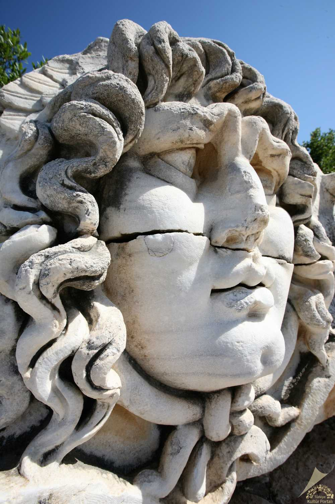
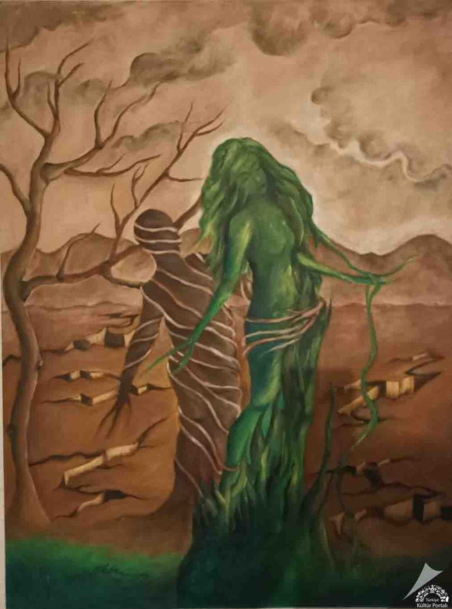
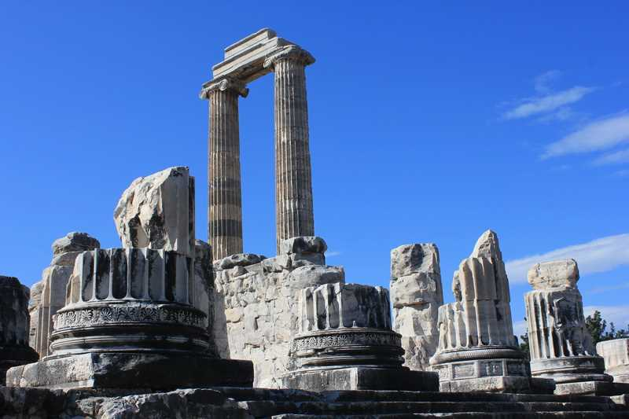

Bazı yolculuklar bir yerden başka bir yere gitmek, bir yerden ötekine hareket etmek değildir.
İnsan bazen yıllar sonra başladığı yere döner; ama dönen kişi, artık yola çıkan kişi değildir. Değişen sadece mesafeler değil, mesafeyi yaşayan kişinin kendiliğidir. Benim meslek yaşamımın önemli bir bölümü Didim’de geçti. On dört yıl boyunca bu kentte psikiyatri uzmanı olarak çalıştım. İnsan zihninin karmaşasına, kaygılarına, kırılmalarına, umutlarına ve yeniden toparlanma gücüne burada danışanlarıma, hastalarıma eşlik ettim. Ve belki de yıllarca fark etmeden Apollon’un gölgesinde çalıştım.
Çünkü Didim’in hemen yanı başında, binlerce yıldır ayakta duran Apollon Tapınağı vardır. Medusa başının eşlik ettiği görkemli Apollon tapınağı. Onlarca kez şiddetli depremler geçirmiş olmasına rağmen hâlen ciddi şekilde ayakta kalabilen Apollon tapınağı. Bu tapınağa antik dünyanın insanları yalnızca bir tanrıya seslenmek için değil, bir cevap aramak için de gelirlerdi. Didyma’nın Apollon’u kehanetin, bilginin, aklın ve ölçünün Apollon’uydu.

Aydın İl Kültür ve Turizm Müdürlüğü / Kültür Portalı
İnsanlar ona geleceği soruyordu. Akıl, bilgi ve gelecek bilgesi kahin Apollon sorulara cevap vermeye çalışıyordu.
Ben ise yüzyıllar sonra aynı coğrafyada başka sorularla karşılaştım:
“Bana ne oluyor?”
“Neden böyle hissediyorum?”
“Bundan kurtulabilecek miyim?”
“Hayatım yeniden eskisi gibi olacak mı?”
Belki çağlar değişmişti, soruların dili değişmişti; fakat insanın kendisini anlama ihtiyacı aslında pek de değişmemişti.
Didyma’da insanlar aradıkları cevapları taşların, sütunların arasında arıyordu.
Ben ise on dört yıl boyunca poliklinik odasında insan zihninin içinde aradım.
Arayışlar devam ederken başka bir yol beni başka bir Apollon’un ülkesine götürdü.
Hatay’a…
Meslek hayatımın yirmi sekizinci yılında, emekliliğe yaklaşırken yaklaşık üç aylık kısa bir görev için Hatay’daydım. İlk bakışta bu, meslek yaşamımın uzun yılları içinde küçücük bir zaman dilimiydi.
Ama bazen bir yolculuğun önemi, süresiyle ölçülmez.
Hatay’da karşıma çıkan Apollon, Didim’de tanıdığım Apollon’dan biraz farklıydı.
Didim’deki Apollon daha çok aklın, kehanetin ve bilginin temsilcisiyken; Antakya’nın Daphne’sinde karşımıza çıkan Apollon, aşkın peşinden koşan, aşkı çağlayan sularla harmanlanmış bir tanrıydı.

Kültür Portalı · Görsel sahibi: Elçin Şahal Oskay
Mitolojiye göre Apollon, Daphne’ye âşık olur. Fakat bu aşk karşılık bulmaz. Daphne ondan kaçar. Kaçışı sonunda dönüşüme varır ve Daphne bir defne ağacına dönüşür.
Apollon bu kez geleceği bilen tanrı değildir. Akıl ve kehanetten biraz daha uzak bir tanrıdır. Artık o ne olacağını kontrol edemeyen bir âşıktır Hatay’ın mistik coğrafyasında.
Bu noktada Hatay bana şunu hatırlatmaya çalışıyordu;
İnsan ne kadar bilgili, güçlü ya da deneyimli olursa olsun hayatın her bölümünü kontrol edemez.
Hayatımızla ilgili bazı şeyleri değiştirebiliriz, bazılarını anlamaya çalışırız, bazılarını ise kabul edip yolumuza devam ederiz. Ancak her şeyi kontrol etmek ve istenilen örüntüye sokmak imkânsızdır.
Psikiyatri de bana yıllar boyunca biraz bunu öğretti.
İnsan zihni yalnızca bilgiyle açıklanmaz. Düşünce, mantık, akıl var olduğu gibi korku vardır, aşk vardır, kayıp vardır, bağlanma vardır, vazgeçememek vardır. Bazen mantığın çözemediği şeyleri duygular taşır.
Apollon’un bir başka yüzü ise müziktir.
Elindeki antik sazı lirle Apollon yalnızca kehanetin değil, müziğin ve sanatın da tanrısıdır. Çünkü insan ruhu yalnızca sözcüklerle anlatılamaz. Bazen bir melodi, yıllarca söylenememiş bir duygunun karşılığıdır. Kendi ahengi ile sıralanmış notalar bütünselliği o duygunun dışavurum aracı olmaktadır. Bazen de aracın kendisi amaç olabilir. O nedenle duygudurum bazen müzik ile kendini dışavururken bazen de müzik direkt o duyguduruma etki eder. İnteraktif bir ilişkidir bu aslında. Apollon’un bilgeliğinin sanatına etkisi gibi aşkı da mantığına etki etmiştir. Belki bu yüzden insan zihniyle çalışan bir meslekte yirmi sekiz yıl geçirdikten sonra dönüp baktığımda mesleğimi yalnızca saf bir bilim olarak göremiyorum.
Elbette psikiyatri bilimdir.
Ama insanı dinlemek, anlamak, anlamlandırmak biraz da sanattır.
Hangi sorunun sorulacağını bilmek, bazen susmak, bazen bir insanın anlattığının arkasındaki asıl duyguyu fark etmek…
Bunların hiçbirini yalnızca kitaplardan öğrenemiyorsunuz.
Bilim bize yolu gösteriyor.
İnsan ise her defasında o yolu yeniden ve yeniden tarif ediyor.
Ve belki Apollon’un bütün bu kimliklerinin ortak noktası tam da burada ortaya çıkıyor:
Bilgi…
Sanat…
Müzik…
Aşk…
Ölçü…
Ve insanın kendisini anlama çabası.
Hatay benim için aynı zamanda başka bir eşiğin adı oldu.
Yirmi sekiz yıllık kamu görevimin son durağı…
Emekliliğe ev sahipliği yapan şehir…
Meslek yaşamımın bir döneminin kapandığı yer.
Sonra yeniden Didim’e döndüm.
Başladığım coğrafyaya.
Ama bu kez başka bir biçimde.
Artık kamu görevinin koridorlarından değil, kendi muayenehanemin kapısından gireceğim mesleğime.
Yine psikiyatrist olarak…
Yine insan hikâyelerini dinleyerek…
Ama meslek yaşamımın yeni döneminde, kendi yolumu biraz daha kendim çizerek.
Böylece garip ve güzel bir çember tamamlandı:
Didim → Hatay → Didim.

Kültür Portalı / Official Turkish Museums
Bir yanında Didyma’nın geleceği anlamaya çalışan Apollon’u…
Diğer yanında Daphne’nin peşinden koşarken aşkın ve kaybetmenin ne olduğunu yaşayan Apollon…
Bir yanında bilimin ışığı…
Diğer yanında sanatın ve müziğin sesi…
Ve bütün bunların ortasında yirmi sekiz yıllık bir meslek yaşamı.
Bugün geriye baktığımda Hatay’ı yalnızca üç ay çalıştığım bir şehir olarak görmüyorum.
Meslek hayatımın uzun cümlesinin sonuna konulan bir nokta gibiydi.
Didim ise aynı cümlenin başladığı yer olmasına rağmen şimdi yeni bir paragrafın da başlangıcı.
Belki de hayatın en güzel taraflarından biri bu:
Bazen başladığınız yere dönersiniz.
Ama başlangıca değil.
Van depreminden sonra yerleştiğim Didim’e ilk geldiğimde önümde uzun bir meslek hayatı vardı.
Şimdi ise yeniden Didim’deyim.
Arkamda yirmi sekiz yıllık birikim, binlerce insan hikâyesi, sayısız görüşme, başarılar, zor günler, öğrenilenler ve değişen bir ben var.
Didyma’nın Apollon’una artık geleceği sormuyorum.
Çünkü yıllar bana geleceğin bütünüyle bilinemeyeceğini öğretti.
Belki daha anlamlı bir soru var:
“Bundan sonra nasıl bir yol yürümek istiyorum?”
Cevabım ise oldukça açık.
Bilimden ve sanattan uzaklaşmadan insan zihnini merak etmeye devam ederek…
Tapınağın taşlarının birkaç kilometre ötesinde, meslek hayatımın yeni dönemine başlıyorum.
Bu kez önümde kendi yolculuğum var. Ve bilgelik tanrısı Apollon’un bana bütün bu yol boyunca fısıldadığı cümlelerle:
Işık bazen yolu göstermez.
Sadece yürümeye devam edebilmeniz için önünüzü yeterince aydınlatır.
Benim için şimdi yeni bir yol başlıyor.
Yine Didim’de.
Yine Apollon’un ülkesinde.
Ama bu kez, kendi yolumda.
Uzm. Dr. Özgür Özbebit
Didim — Eylül 2026